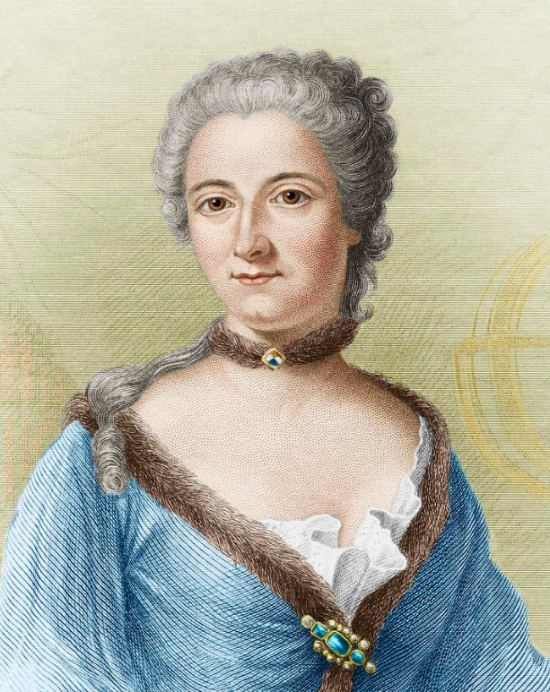

naissance: 17 décembre 1706
mort: 10 septembre 1749
lieu de mort: Lunéville
Mathématicienne, physicienne et traductrice de Newton, Emilie du Chatelet est la première femme à avoir été publiée par l'Académie des sciences,
avec son ouvrage "Dissertation sur la nature et la propagation du feu", qu'elle écrit en 1738 pour le prix de l'Aacadémie des sciences de la même année,
elle s'habille en homme pour y participer.
Elle commence sa carrière de mathématicienne en 1734. En 1740, elle écrit "Institution de physique" et six ans après, elle est élue membre de l'Académie de sciences de l'institut de Boulogne.
C'est la seule institution ouverte aux femmes, et Emilie du Châtelet devient alors une des 10 savantes les plus connu en Europe.
Elle traduit les oeuvres de Newton, et elle traduit "Principe mathématiques de la philosophie naturelle " en 1726 et est publié en 1759.

Son enfance:
« Son père lui a apprit le latin, le grec ancien, l'allemand. A 12 ans elle sait lire couramment l'allemand, l'anglais, le grec et le latin.
Elle aime la danse, le théâtre, la gymnastique, l'équitation et chanter l'opéra.
Elle s'intérèsse aussi à la philosophie naturelle, les sciences et elle aimait particulièrement les mathématiques.
Dans ses études elle privilégiait les domaines scientifiques car elle voulait comprendre l'univers.
Sa deuxième passion était la mode, les bijoux, les robes et les chaussures.»
Son père a organisé un cercle littéraire ou elle a pu rencontrer Fontenelle, qui lui donna des cours de sciences et Voltaire fréquenta aussi ce salon avant qu'il ne devienne proche avec Emilie.
Le 20 juin 1725 elle se maria avec Florent Claude du Chatelet. C'était un militaire qui était gouverneur de Semur-en-Auxois, à cause de sa carrière ils se voient rarement. Son mari la laissa vivre librement,
ils ont eut 4 enfants:
Françoise Gabrielle Pauline, l'ainé. Louis-Marie Florent du Châtelet, le deuxième.
Victor Esprit, le troisième
et Stanislas Adélaide mais dont le père était Jean François de Saint Lambert.
Emilie déceda six jours après la naissance de son dernier enfant.
Relation avec Voltaire:
Lorsqu'ils se rencontrairent, Voltaire avait 39 ans et Emilie avait 27 ans.
En 1732, alors que son mari Florent Claude du Châtelet participe à la guerre de succession de Pologne, Emilie quitte Semur-en-Auxois pour Paris.
En 1733, elle rencontre Voltaire,Lorsqu'ils se rencontrairent, Voltaire avait 39 ans et Emilie avait 27 ans.
leur liaison durera 15 ans. Dès 1734, elle accueille Voltaire chez elle, dans son château de Cirey.
Voltaire ayant du quitter Paris en 1735 car il est menacé par une lettre du cachet(lettre servant de transmission d'un ordre du roi).
Ils déménageront et aménageront dans une bibliothèque, qu'ils auront rénovés et achèteront des instruments scientifiques pour travailler ensemble.
 Auteur: Inconnu/Musée: Le Grand Palaix, Paris
Auteur: Inconnu/Musée: Le Grand Palaix, Paris